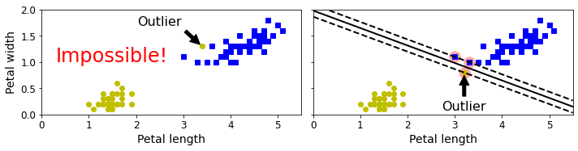

讲解绘图与支持向量机(support vector machine)
讲解绘图
等高线
| import numpy as np
import pandas as pd
import matplotlib.pyplot as plt
# 计算x,y坐标对应的高度值
def f(x, y):
return (1-x/2+x**5+y**3) * np.exp(-x**2-y**2)
# 生成x,y的数据
n = 256
x = np.linspace(-3, 3, n)
y = np.linspace(-3, 3, n)
# 把x,y数据生成mesh网格状的数据，因为等高线的显示是在网格的基础上添加上高度值
X, Y = np.meshgrid(x, y)
# 填充等高线
plt.contourf(X, Y, f(X, Y))
# 显示图表
plt.show()
|
SVM分割超平面
| def plot_hyperplane(clf, X, y,
h=0.02,
draw_sv=True,
title='hyperplan'):
# create a mesh to plot in
x_min, x_max = X[:, 0].min() - 1, X[:, 0].max() + 1
y_min, y_max = X[:, 1].min() - 1, X[:, 1].max() + 1
xx, yy = np.meshgrid(np.arange(x_min, x_max, h),
np.arange(y_min, y_max, h))
plt.title(title)
plt.xlim(xx.min(), xx.max())
plt.ylim(yy.min(), yy.max())
plt.xticks(())
plt.yticks(())
Z = clf.predict(np.c_[xx.ravel(), yy.ravel()]) # SVM的分割超平面
# Put the result into a color plot
Z = Z.reshape(xx.shape)
plt.contourf(xx, yy, Z, cmap='hot', alpha=0.5)
markers = ['o', 's', '^']
colors = ['b', 'r', 'c']
labels = np.unique(y)
for label in labels:
plt.scatter(X[y==label][:, 0],
X[y==label][:, 1],
c=colors[label],
marker=markers[label])
# 画出支持向量
if draw_sv:
sv = clf.support_vectors_
plt.scatter(sv[:, 0], sv[:, 1], c='y', marker='x')
from sklearn import svm
from sklearn.datasets import make_blobs
# 生成一个有两个特征、包含两种类别的数据集
X, y = make_blobs(n_samples=100, centers=2,
random_state=0, cluster_std=0.3)
clf = svm.SVC(C=1.0, kernel='linear')
clf.fit(X, y)
plt.figure(figsize=(12, 4), dpi=144)
plot_hyperplane(clf, X, y, h=0.01,
title='Maximum Margin Hyperplan')
|
使用不同核函数的分割超平面
首先生成一个有两个特征、包含三个类别的数据集，然后构造4个SVM算法来拟合数据集，分别是线性核函数、三阶多项式核函数、r=0.5的高斯核函数，以及r=0.1的高斯核函数。
最后把这4个SVM算法拟合出来的分割超平面画出来
| from sklearn import svm
from sklearn.datasets import make_blobs
X, y = make_blobs(n_samples=100, centers=3,
random_state=0, cluster_std=0.8)
clf_linear = svm.SVC(C=1.0, kernel='linear')
clf_poly = svm.SVC(C=1.0, kernel='poly', degree=3)
clf_rbf = svm.SVC(C=1.0, kernel='rbf', gamma=0.5)
clf_rbf2 = svm.SVC(C=1.0, kernel='rbf', gamma=0.1)
plt.figure(figsize=(10, 10), dpi=144)
clfs = [clf_linear, clf_poly, clf_rbf, clf_rbf2]
titles = ['Linear Kernel',
'Polynomial Kernel with Degree=3',
'Gaussian Kernel with $\gamma=0.5$',
'Gaussian Kernel with $\gamma=0.1$']
for clf, i in zip(clfs, range(len(clfs))):
clf.fit(X, y)
plt.subplot(2, 2, i+1)
plot_hyperplane(clf, X, y, title=titles[i])
|
维诺图(Voronoi)
Voronoi 图的又叫泰森多边形或 Dirichlet 图，它是由一组由连接两邻点直线的垂直平分线组成的连续多边形组成。
Voronoi 图有如下特点：
（1）每个V多边形内有一个生成元；
（2）每个V多边形内点到该生成元距离短于到其它生成元距离；
（3）多边形边界上的点到生成此边界的生成元距离相等；
（4）邻接图形的Voronoi多边形界线以原邻接界线作为子集。
| # 生成数据
from sklearn.datasets import make_blobs
blob_centers = np.array(
[[ 0.2, 2.3],
[-1.5 , 2.3],
[-2.8, 1.8],
[-2.8, 2.8],
[-2.8, 1.3]])
blob_std = np.array([0.4, 0.3, 0.1, 0.1, 0.1])
X, y = make_blobs(n_samples=2000, centers=blob_centers,
cluster_std=blob_std, random_state=7)
# 使用KMeans 生成边界
from sklearn.cluster import KMeans
k = 5
kmeans = KMeans(n_clusters=k, random_state=42)
y_pred = kmeans.fit_predict(X)
def plot_data(X):
plt.plot(X[:, 0], X[:, 1], 'k.', markersize=2)
def plot_centroids(centroids, weights=None, circle_color='w', cross_color='k'):
if weights is not None:
centroids = centroids[weights > weights.max() / 10]
plt.scatter(centroids[:, 0], centroids[:, 1],
marker='o', s=35, linewidths=8,
color=circle_color, zorder=10, alpha=0.9)
plt.scatter(centroids[:, 0], centroids[:, 1],
marker='x', s=2, linewidths=12,
color=cross_color, zorder=11, alpha=1)
def plot_decision_boundaries(clusterer, X, resolution=1000, show_centroids=True,
show_xlabels=True, show_ylabels=True):
mins = X.min(axis=0) - 0.1
maxs = X.max(axis=0) + 0.1
xx, yy = np.meshgrid(np.linspace(mins[0], maxs[0], resolution),
np.linspace(mins[1], maxs[1], resolution))
Z = clusterer.predict(np.c_[xx.ravel(), yy.ravel()])
Z = Z.reshape(xx.shape)
plt.contourf(Z, extent=(mins[0], maxs[0], mins[1], maxs[1]),
cmap="Pastel2")
plt.contour(Z, extent=(mins[0], maxs[0], mins[1], maxs[1]),
linewidths=1, colors='k')
plot_data(X)
if show_centroids:
plot_centroids(clusterer.cluster_centers_)
if show_xlabels:
plt.xlabel("$x_1$", fontsize=14)
else:
plt.tick_params(labelbottom=False)
if show_ylabels:
plt.ylabel("$x_2$", fontsize=14, rotation=0)
else:
plt.tick_params(labelleft=False)
plt.figure(figsize=(8, 4))
plot_decision_boundaries(kmeans, X)
plt.show()
|
SVM之线性不可分与核技巧
1 线性不可分
1.1 从线性不可分谈起
根据前面介绍SVM的思想来看，我们谈到的情况都是线性可分的，也就是说总能找到一个超平面将数据集分开。 可事实是现实总是那么不完美，大多情况都是线性不可分的。如下图所示[1]：
对于上面这种情况我们应该怎么才能将其分开呢？将原来的输入特征映射到更高维度的空间即可完成上述的分类问题。
如图所示，现在我们已经用一个平面完美的将其分开了。不过此时可能传来这么一个声音“你逗我？，这是刚刚的数据集么？明明刚刚在二维平面，现在却跑到三维平面去了，靠谱点好不？” 对，数据集确确实实已经不是同一个数据集了，但是： 每个数据样本所对应的类别却依旧和原来的一样 ，只不过现在我们给它穿上了一件“马甲”。也就是说，假如\( x^{(i)} \)是正样本，那么它穿上马甲变成\( \hat{x}{^{(i)}} \)之后仍然属于正样本。正如那句：你大妈 （数据集）已经不是你原来的（数据集）大妈了，但（每个样本点所对应的类别）你大爷仍旧（和先前一样）是你大爷。
说到这里是不是意味着我们就解决了SVM中线性不可分的问题呢？解决倒是解决了，可这种方式的效率太低了。
1.2 将低维特征映射到高维空间
所谓将低维特征映射到高维空间指的是用一定的映射关系，将原始特征映射到更高维度的空间。比如通过一个函数\( \phi(x) \)将一维特征x映射到三维特征\( x,x^2,x^3 \)。
SVM中权重w的计算解析式: \( w=\sum_{i=1}^m\alpha_iy^{(i)}x^{(i)} \) (1)
假如此时\( \alpha_i \)和b已知，那么对一个新的样本点进行预测，则其预测结果为：
\[ \begin{aligned} y&=w^Tx+b\\ &=\sum_{i=1}^m\alpha_iy^{(i)}x^{(i)}x+b\\ &=\sum_{i=1}^m\alpha_iy^{(i)}\langle x^{(i)},x\rangle+b \end{aligned}\tag{2} \]
其中\( x^{(i)} \)表示训练集中的样本点（其实只是支持向量），x新的样本点；\( \langle a,b\rangle \)表示a,b之间的内积（inner products）。
按照我们上面提到的通过函数\( \phi(x) \)将低维映射到高维的思想，我们在预测时只需要将之前的x，全部替换成\( \phi(x) \)即可：
\[ \begin{aligned} y&=\sum_{i=1}^m\alpha_iy^{(i)}\langle x^{(i)},x\rangle+b\\ &=\sum_{i=1}^m\alpha_iy^{(i)}\langle \phi(x),\phi(z)\rangle+b \end{aligned}\tag{3} \]
其中\( \phi(x) \)表示训练集映射之后的结果，\( \phi(z) \)表示新样本映射后的结果，用不同字母只是为了区分。
虽然这样一来解决了SVM中线性不可分的难题，但是又出现了一个新的问题——“ 维度爆炸 ”，如下所示：
现有数据集\( \mathcal{X} \)，其样本点\( x^{(i)} \)有3个维度，分别为\( x^{(i)}_1,x^{(i)}_2,x^{(i)}_3 \)（下面简写为\( x_1,x_2,x_3 \)）。现通过函数\( \phi(x) \)将其映射到某个9维空间中，假设其分别为\( (x_1x_1,x_1x_2,x_1x_3,x_2x_1,x_2x_2,x_2x_3,x_3x_1,x_3x_2,x_3x_3) \)。如果此时要对新样本进行预测，则先要进行计算\( \langle \phi(x),\phi(z)\rangle \):
\[ \begin{aligned} \phi(x)&=(x_1x_1,x_1x_2,x_1x_3,x_2x_1,x_2x_2,x_2x_3,x_3x_1,x_3x_2,x_3x_3)^T\\ \phi(z)&=(z_1z_1,z_1z_2,z_1z_3,z_2z_1,z_2z_2,z_2z_3,z_3z_1,z_3z_2,z_3z_3)^T\\ \langle \phi(x),\phi(z)\rangle&=(x_1x_1z_1z_1+x_1x_2z_1z_2+\cdots+x_3x_3z_3z_3)^T \end{aligned}\tag{4} \]
此时你应该会发现这个过程的计算量太大了，整体复杂度为\( o(n^2) \)（分别为\( o(n^2),o(n^2),o(n) \)）。因此，若要进行更为复杂的映射那么其复杂度将不可想象的，而这就是“维度爆炸”。但是此时我们仔细想一想，“映射”和“预测”之间到底是什么关系了。“映射”是作为一种思想，将低维映射到高维，从而解决线性不可分到可分的问题；而“预测”时所计算的则是\( \langle \phi(x),\phi(z)\rangle \)，但说穿了它就是一个值，不管你采取何种的映射规则，在预测时都要计算这么一个值。因此，假如我们能通过某种“黑箱”直接计算出这么一个值，岂不乐哉？有没有呢？当然有，这一“黑箱”操作就称为 核函技巧（Kernel Trick） 。
1.3 核技巧
设\( \mathcal{X} \)是输入空间（欧式空间\( R^n \)的子集或离散集合），又设\( \mathcal{H} \)为特征空间（希尔伯特空间），如果存在一个从\( \mathcal{X} \)到 \( \ mathcal{H} \)的映射\( \phi(x):\mathcal{X}\longrightarrow \mathcal{H} \)使得对所有x,\( z\in\mathcal{X} \)，函数\( K(x,z) \)满足条件\( K(x,z)=\phi(x)\cdot\phi(z) \)，则称\( K(x,z) \)为核函数，\( \phi(x) \)称为映射函数。
直白点说就是：所有的映射都能找到一个与之对应的核函数\( K(x,z) \)用来计算\( \langle \phi(x),\phi(z)\rangle \)，从而避免了上面出现的“维度爆炸”的问题。因此，核函数可以看做是实现“黑箱”操作（核技巧）的工具。
假设(4)中，有两个样本点，x为训练集中的样本点，z为新的样本点，其分别为x=(1,2,3),z=(2,3,4)，则：
\[ \begin{aligned} \phi(x)&=(x_1x_1,x_1x_2,x_1x_3,x_2x_1,x_2x_2,x_2x_3,x_3x_1,x_3x_2,x_3x_3)^T\\ &=(1\times1,1\times2,1\times3,2\times1,2\times2,2\times3,3\times1,3\times2,3\times3)^T\\ \phi(z)&=(z_1z_1,z_1z_2,z_1z_3,z_2z_1,z_2z_2,z_2z_3,z_3z_1,z_3z_2,z_3z_3)^T\\ &=(2\times2,2\times3,2\times4,3\times2,3\times3,3\times4,4\times2,4\times3,4\times4)^T\\ \langle \phi(x),\phi(z)\rangle&=(x_1x_1z_1z_1+x_1x_2z_1z_2+\cdots+x_3x_3z_3z_3)^T\\] &=4+12+24+12+36+72+24+72+144=400\\ K(x,z)&=(x^Tz)^2=(2+6+12)^2=400 \end{aligned} \]
有没有发现，两者的结果一样但是在计算上却相差甚远？前者需要\( O(n^2) \)的时间复杂度，而后者只要\( O(n) \)即可。那有人就会问，你是怎么知道\( (x^Tz)^2 \)等于\( \phi(x)\cdot\phi(z) \)的？那下面就是推导：
\[ \begin{aligned} (x^Tz)^2&=\large(\sum_{i=1}^nx_iz_i)\large(\sum_{j=1}^nx_jz_j)\\ &=\sum_{i=1}^n\sum_{j=1}^nx_ix_jz_iz_j\\ &=\sum_{i=1}^n\sum_{j=1}^n\color{red}{x_ix_j}\color{blue}{z_iz_j}\\ &=x_1x_1z_1z_1+x_1x_2z_1z_2+x_1x_3z_1z_3+\cdots+x_nx_nz_nz_n\\ &=\phi(x)\cdot\phi(z) \end{aligned}\tag{5} \]
其实也就是说，我先进行了这么一个推导知道\( (x^Tz)^2 \)等于\( \phi(x)\cdot\phi(z) \)，然后在举例过程中才列出了\( \phi(x) \)这么一中映射规则。但是话又说回来，你这么关系映射规则干什么呢？你需要的是映射规则吗？你需要的不就是这个内积吗？假如我现在换成\( K(x,z)=(x^Tz)^5 \)，那么你也只需要计算\( (2+6+12)^5 \)的值即可，而根本不用关系原始特征被映射到了一个什么样的高维空间，并且从一定程度上来说映射到的空间越高越有利于找到分类决策面。我们所要担心的就是核\( K(x,z) \)背后所表示的空间是否存在，即这个核的有效性。
1.4 从高维到无穷维
上面我们说到，从一定程度上来说映射到的空间越高越有利于找到分类决策面，那要是能映射到n维空间岂不是更好？说得倒是没错，但这该怎么实现呢？是令\( K(x,z)=(x^Tz)^n \)？
要实现从低维到无穷维的映射的方法之一就是借助 高斯核函数（Gaussian Kernel）或者称之为径向基函数（Radial Basis Function, RBF） 。
\[ \begin{align} K(x, z) &= \exp \left( \frac{-||x-z||^2}{2 \sigma^2} \right) \\ &= \exp \left( \frac{-||x||^2}{2 \sigma^2} \right) \exp \left( \frac{-||z||^2}{2 \sigma^2} \right) \exp \left( \frac{\langle x, z \rangle}{\sigma^2} \right). \\ \end{align}\tag{6} \]
为什么借助(6)我们就能实现到无穷维的映射呢？想象一下泰勒展开，(6)式中第二行第三项的泰勒展开为：
\[ \exp \left( \frac{\langle x, z \rangle}{\sigma^2} \right) = 1 + \frac{\langle x, z \rangle}{\sigma^2} + \frac{\langle x, z \rangle^2}{2 \sigma^4} + \frac{\langle x, z \rangle^3}{6 \sigma^6} + \cdots,\tag{7} \]
也就是说，由于泰勒展开的存在，RBF自然就隐含的实现了从低维到无穷维的映射。
1.5 常见核函数
我们在实际解决问题的时候，甚至都不用关心它到底是如何映射的，只需要正确选用核函数，实现分类的目的即可。下面是一些常见的核函数，虽然大家都常见但用得最多的依旧是高斯核函数。
- 线性核Linear Kernel: \( k(x,z) = x^Tz + C \), 其中 C 为常数
- 多项式核Polynolial Kernel: \( k(x,z) = (x^Tz)^d + C \) , 其中 C 为常数
- 高斯核（Gaussian Kernel): \( k(x,z) = \exp\large({-\frac{||x-z||^2}{2\sigma^2}}) \), 其中，\( \sigma>0 \)为高斯核的带宽(width)
- 拉普拉斯核Laplacian Kernel: \( k(x_i,x_j) = exp\large({-\frac{||x_i-x_j||}{\sigma}}),\sigma>0 \)
- Sigmoid核: \( k(x,z) = tanh(\beta x^Tz+\theta) \), 其中，\( thanh \)为双曲正切函数，\( \beta>0,\theta<0 \)
通过前面的讨论可知，我们希望样本点在特征空间内线性可分，因此特征空间的好坏对支持向量机的性能至关重要。需要注意的是，在不知道特征映射的形式时，我们并不知道什么样的核函数的合适的，而核函数也仅是隐式地定义了这个特征空间。于是，核函数的选择称为支持向量机最大的变数。
最后，对于核函数的使用只需要在定义模型的时候通过参数kernel='rbf'指定即可，默认为高斯核函数。
SVM软间隔最大化
2.1 什么是软间隔
我们之前谈到过两种情况下的分类：一种是直接线性可分的；另外一种是通过\( \phi(x) \)映射到高维空间之后“线性可分”的。为什么后面这个“线性可分”要加上引号呢？虽然通过映射到高维空间的方式能够 很大程度上 使得原先线性不可分的数据集线性可分，但是我们并不能够一定保证它就是线性可分的，可能这个高维空间依旧线性不可分得换一个（事实上你还是不知道换哪一个更好，所以此时就要折中选择），或者保守的说即使线性可分了，但也可能会有过拟合现象。这是因为超平面对于异常点（outlier)过于敏感。如下图：

如果在测试集中出现一个异常点，那它将导致分类直线发生剧烈的摆动。我们将上图中的情况称之为 硬间隔（hard margin） ，即不允许任何样本出现错分的情况，哪怕导致过拟合。而我们所期望的应该是容许少量样本被错分，从而得到一个次优解，而这个容忍的程度则通过目标函数来调节。或者再极端一点就是，根本找不到一个超平面能够将样本无误的分开（不过拟合的前提下），必须得错分一些点。此时图中虚线与实线之间的间隔就称之为 软间隔（soft margin） 。
| from sklearn.svm import SVC
from sklearn import datasets
iris = datasets.load_iris()
X = iris["data"][:, (2, 3)] # petal length, petal width
y = iris["target"]
setosa_or_versicolor = (y == 0) | (y == 1)
X = X[setosa_or_versicolor]
y = y[setosa_or_versicolor]
X_outliers = np.array([[3.4, 1.3], [3.2, 0.8]])
y_outliers = np.array([0, 0])
Xo1 = np.concatenate([X, X_outliers[:1]], axis=0)
yo1 = np.concatenate([y, y_outliers[:1]], axis=0)
Xo2 = np.concatenate([X, X_outliers[1:]], axis=0)
yo2 = np.concatenate([y, y_outliers[1:]], axis=0)
svm_clf2 = SVC(kernel="linear", C=10**9)
svm_clf2.fit(Xo2, yo2)
fig, axes = plt.subplots(ncols=2, figsize=(10,2.7), sharey=True)
plt.sca(axes[0])
plt.plot(Xo1[:, 0][yo1==1], Xo1[:, 1][yo1==1], "bs")
plt.plot(Xo1[:, 0][yo1==0], Xo1[:, 1][yo1==0], "yo")
plt.text(0.3, 1.0, "Impossible!", fontsize=24, color="red")
plt.xlabel("Petal length", fontsize=14)
plt.ylabel("Petal width", fontsize=14)
plt.annotate("Outlier",
xy=(X_outliers[0][0], X_outliers[0][1]),
xytext=(2.5, 1.7),
ha="center",
arrowprops=dict(facecolor='black', shrink=0.1),
fontsize=16,
)
plt.axis([0, 5.5, 0, 2])
plt.sca(axes[1])
plt.plot(Xo2[:, 0][yo2==1], Xo2[:, 1][yo2==1], "bs")
plt.plot(Xo2[:, 0][yo2==0], Xo2[:, 1][yo2==0], "yo")
plot_svc_decision_boundary(svm_clf2, 0, 5.5)
plt.xlabel("Petal length", fontsize=14)
plt.annotate("Outlier",
xy=(X_outliers[1][0], X_outliers[1][1]),
xytext=(3.2, 0.08),
ha="center",
arrowprops=dict(facecolor='black', shrink=0.1),
fontsize=16,
)
plt.axis([0, 5.5, 0, 2])
plt.show()
|
2.2 软间隔最大化
此时我们可以知道，如数据集中出现了异常点，必将导致该异常点的函数间隔小于1。所以，此时引入一个松弛变量\( (\xi>0) \)，使得函数加上松弛变量大于等于1。\( y^{(i)}(w^Tx^{(i)}+b)\geq1-\xi_i \)
那么此时的目标函数可以重新改写为如下形式：
\[ \begin{aligned} \min_{w,b,\xi} &\frac{1}{2}{||w||^2}+C\sum_{i=1}^m\xi_i\\ s.t.\;\;&y^{(i)}\large(w^Tx^{(i)}+b)\geq1-\xi_i,i=1,2,...m\\ &\xi_i\geq0,i=1,2,...m \end{aligned}\tag{2} \]
其中C>0称为惩罚参数，C越大时对误分类的惩罚越大，其作用等同于正则化中的\( \lambda \) 。最小化目标函数(2)包含两层含义：使 \( \frac{1}{2}||w||^2 \)尽量小，即分类间隔尽量大，同时使误分类点的个数尽量小，C是调和二者的系数。并且只要错分一个样本点，我们都将付出\( C\xi_i \)的代价。
3.1 API介绍
在前面一篇文章中，我们大致列出了sklearn中SVM分类器的几个重要参数，如下所示：
| def __init__(self, C=1.0,
kernel='rbf',
degree=3,):
|
其中C就表示式子(2)中的惩罚系数，它的作用就是用来控制容忍决策面错分的程度，越大则模型越偏向于过拟合。如下图所示为不同取值C下的决策面（左图决策面中C=1，右图决策面中C=100）：
| import numpy as np
from sklearn import datasets
from sklearn.pipeline import Pipeline
from sklearn.preprocessing import StandardScaler
from sklearn.svm import LinearSVC
iris = datasets.load_iris()
X = iris["data"][:, (2, 3)] # petal length, petal width
y = (iris["target"] == 2).astype(np.float64) # Iris virginica
scaler = StandardScaler()
svm_clf1 = LinearSVC(C=1, loss="hinge", random_state=42)
svm_clf2 = LinearSVC(C=100, loss="hinge", random_state=42)
scaled_svm_clf1 = Pipeline([
("scaler", scaler),
("linear_svc", svm_clf1),
])
scaled_svm_clf2 = Pipeline([
("scaler", scaler),
("linear_svc", svm_clf2),
])
scaled_svm_clf1.fit(X, y)
scaled_svm_clf2.fit(X, y)
# Convert to unscaled parameters
b1 = svm_clf1.decision_function([-scaler.mean_ / scaler.scale_])
b2 = svm_clf2.decision_function([-scaler.mean_ / scaler.scale_])
w1 = svm_clf1.coef_[0] / scaler.scale_
w2 = svm_clf2.coef_[0] / scaler.scale_
svm_clf1.intercept_ = np.array([b1])
svm_clf2.intercept_ = np.array([b2])
svm_clf1.coef_ = np.array([w1])
svm_clf2.coef_ = np.array([w2])
# Find support vectors (LinearSVC does not do this automatically)
t = y * 2 - 1
support_vectors_idx1 = (t * (X.dot(w1) + b1) < 1).ravel()
support_vectors_idx2 = (t * (X.dot(w2) + b2) < 1).ravel()
svm_clf1.support_vectors_ = X[support_vectors_idx1]
svm_clf2.support_vectors_ = X[support_vectors_idx2]
fig, axes = plt.subplots(ncols=2, figsize=(10,2.7), sharey=True)
plt.sca(axes[0])
plt.plot(X[:, 0][y==1], X[:, 1][y==1], "g^", label="Iris virginica")
plt.plot(X[:, 0][y==0], X[:, 1][y==0], "bs", label="Iris versicolor")
plot_svc_decision_boundary(svm_clf1, 4, 5.9)
plt.xlabel("Petal length", fontsize=14)
plt.ylabel("Petal width", fontsize=14)
plt.legend(loc="upper left", fontsize=14)
plt.title("$C = {}$".format(svm_clf1.C), fontsize=16)
plt.axis([4, 5.9, 0.8, 2.8])
plt.sca(axes[1])
plt.plot(X[:, 0][y==1], X[:, 1][y==1], "g^")
plt.plot(X[:, 0][y==0], X[:, 1][y==0], "bs")
plot_svc_decision_boundary(svm_clf2, 4, 5.99)
plt.xlabel("Petal length", fontsize=14)
plt.title("$C = {}$".format(svm_clf2.C), fontsize=16)
plt.axis([4, 5.9, 0.8, 2.8])
plt.show()
|
参数kernel表示选择哪种核函数，当kernel='poly'时可以用参数degree来选择多项式的次数。但是通常情况下我们都会选择效果更好的高斯核来作为核函数，因此该参数用得比较少。
3.2 分类示例
下面我们采用网格搜索来选择一个最佳SVM分类器对数据集iris进行分类。从上面对API的介绍可知，SVC中我们需要用到的超参数有3个，其取值我们分别设为：'C': np.arange(1, 100, 5)，'kernel': ['rbf', 'linear', 'poly']，'degree': np.arange(1, 20, 2)由此我们就能得到\( 20\times3\times10=600 \)个备选模型。同时，我们以5折交叉验证进行训练。
模型选择
| def model_selection(x_train, y_train):
model = SVC()
paras = {'C': np.arange(1, 100, 5),
'kernel': ['rbf', 'linear', 'poly'], 'degree': np.arange(1, 20, 2)}
gs = GridSearchCV(model, paras, cv=5, verbose=1, n_jobs=-1)
gs.fit(x_train, y_train)
print('best score:', gs.best_score_)
print('best parameters:', gs.best_params_)
|
| #输出结果：
Fitting 5 folds for each of 600 candidates, totalling 3000 fits
[Parallel(n_jobs=-1)]: Using backend LokyBackend with 96 concurrent workers.
[Parallel(n_jobs=-1)]: Done 8 tasks | elapsed: 1.3s
[Parallel(n_jobs=-1)]: Done 258 tasks | elapsed: 2.2s
[Parallel(n_jobs=-1)]: Done 608 tasks | elapsed: 3.6s
[Parallel(n_jobs=-1)]: Done 1058 tasks | elapsed: 5.4s
[Parallel(n_jobs=-1)]: Done 1608 tasks | elapsed: 7.7s
[Parallel(n_jobs=-1)]: Done 2258 tasks | elapsed: 10.5s
[Parallel(n_jobs=-1)]: Done 3000 out of 3000 | elapsed: 13.3s finished
best score: 0.9912413836716626
best parameters: {'C': 6, 'degree': 1, 'kernel': 'rbf'}
|
可以看出，当惩罚系数C=6，以及选取高斯核函数时对应的模型效果最好。（由于选取的是高斯核所以此时参数degree无效。
训练与预测
| def train(x_train, x_test, y_train, y_test):
model = SVC(C=6, kernel='rbf')
model.fit(x_train, y_train)
score = model.score(x_test, y_test)
print("accuracy: ", score)
|
| #输出结果：
accuracy: 0.9851851851851852
|
可以看出，此时模型在测试集上的准确率为0.98。
凡本网注明"来源：XXX "的文/图/视频等稿件，本网转载出于传递更多信息之目的，并不意味着赞同其观点或证实其内容的真实性。如涉及作品内容、版权和其它问题，请与本网联系，我们将在第一时间删除内容！
作者: 月来客栈, 华东交通大学 计算机应用技术硕士
来源： https://zhuanlan.zhihu.com/p/148034340 , https://zhuanlan.zhihu.com/p/148598449?utm_id=0 , http://scikit-learn.org.cn/view/83.html ,